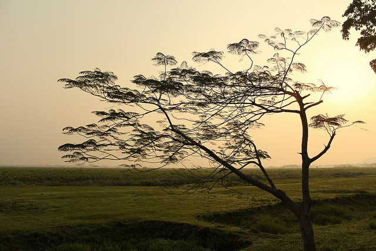

Kamakhya Temple is located on Nilachal Hill, Guwahati top at an altitude of 800 feet above sea level. River Brahmaputra flows on the northern side of the hill. The temple is over 2200 years old. Apart from its rich cultural heritage, Kamakhya is beauty personified. It offers a stunning view of rivers and hills. Whatever faith one follows in life, being at this location would make one experience divinity.

kaziranga
kaziranga
Kaziranga National Park has been declared a World Heritage Site. The park is spread over 430 sq. kms and you will find various wild species such as tiger, elephant, rhinoceros, Indian bison, sambar, deer and many more. If you love birds, you need to be here during winter as migratory birds are seen in great numbers. You could go round the park in a jeep or car. If you fancy elephant ride, you are most welcome. The nearest cities from Kaziranga National Park are Jorhat and Tezpur.